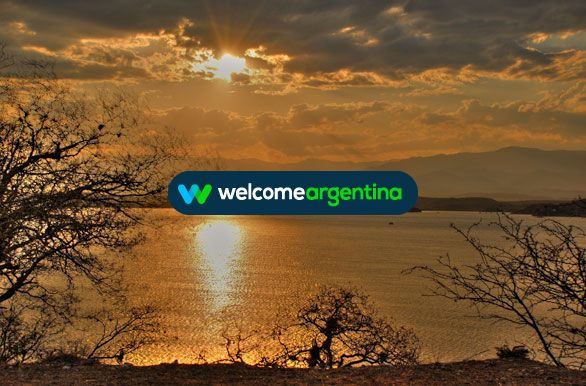
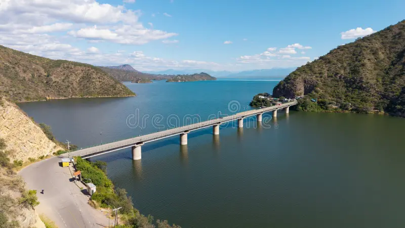
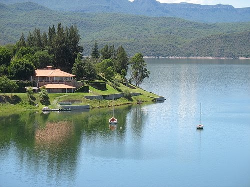
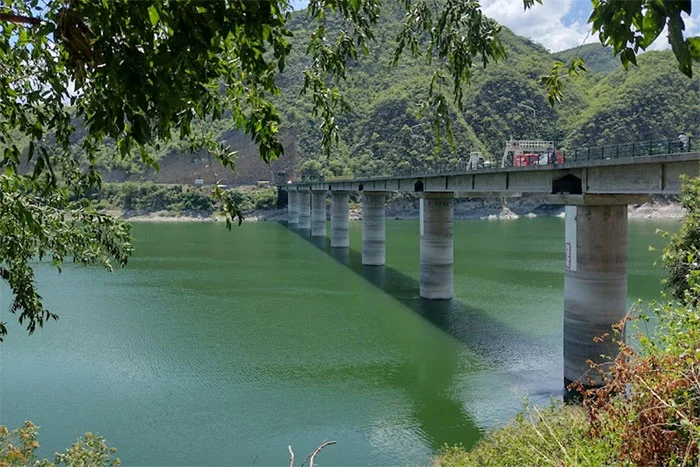
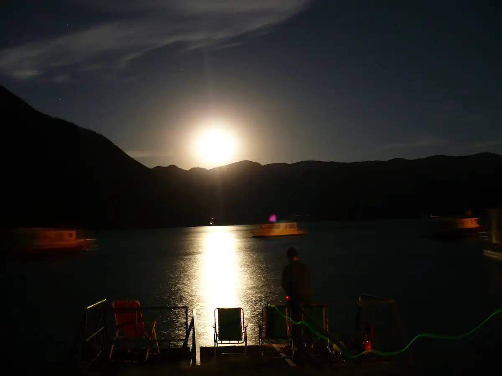

Unforgettable Views
Explore the viewpoints and discover the magic of the golden hour in Salta.
Tips for Photographers
The Cabra Corral Dam offers unique settings. Follow these recommendations for your shots:
- The Golden Hour: Take advantage of the 30 minutes before sunset to get warm tones and perfect reflections on the water.
- El Comedero Viewpoint: This is the highest point for panoramic photos of the reservoir.
- Gear: A polarizing filter will help manage sun reflections on the water's surface.
Best Timing
Recommended season: Autumn and Spring for clear skies and pleasant temperatures.
Dam Gallery





